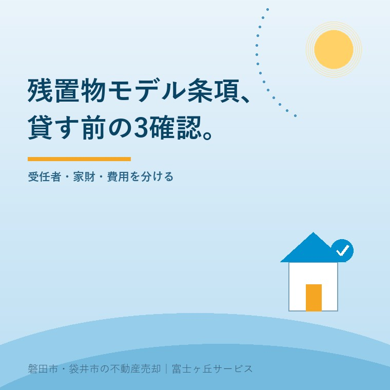

2026年9月9日｜カテゴリ：空き家／賃貸／残置物

この記事の要点
Q. 親の空き家を単身高齢者へ貸すなら、残置物モデル契約条項を入れれば十分ですか。
A. いいえ。賃貸借契約とは別に、借主と受任者が「解除」と「残置物処理」の2契約を任意で結ぶ仕組みです。貸す前に、利用場面が合うか、借主が選ぶ受任者に利益相反がないか、残す物・通知先・費用を決めたかを確認します。貸主が死亡後の家財を自由に捨てる条項ではありません。
磐田市・袋井市・森町では、親の家財を先に分け、管理会社や居住支援法人へ受任の可否を聞いてから契約書を整える方法があります。
親が施設へ入り、空いた実家をすぐには売らない。そこで戸建て賃貸を考えるご家族がいます。高齢の一人暮らしへ貸す可能性が出ると、借主が亡くなった後の契約と家財を誰が扱うのかが心配になります。
国土交通省と法務省は2021年6月、「残置物の処理等に関するモデル契約条項」を策定しました。国土交通省は2025年10月に活用ガイドブック第2版を作成し、Q&Aも更新しています。公表資料を2026年9月9日に確認しました。
名称だけを見ると、賃貸借契約へ特約を1本足せば終わるように見えます。実際は違います。空き家に元からある親の家財と、入居後に借主が所有する家財も分けなければなりません。
残置物の処理等に関するモデル契約条項は、解除委任、残置物処理の委託、賃貸借の関連条項という3つのまとまりでできています。
| 契約関係 | 当事者 | 役割 |
|---|---|---|
| 解除関係事務委任契約 | 借主と受任者 | 借主の死亡後、受任者が貸主との合意解除などを行う |
| 残置物関係事務委託契約 | 借主と受任者 | 賃貸借終了後、受任者が搬出、送付、換価、廃棄などを行う |
| 賃貸借契約の関連条項 | 貸主と借主 | 死亡通知、受任者の変更、立入りへの協力などを定める |
解除と残置物処理の受任者は同じでも別でも構いません。国土交通省は、同じ受任者と結ぶ1通の書式、解除用、残置物用、賃貸借特約例の計4書式を公開しています。
意外なのは、中心となる2契約の当事者に貸主が入らないことです。借主が受任者を選び、内容を理解して任意で同意します。貸主は契約締結を確認し、自分との賃貸借契約へ関連条項を置きます。
実家を貸す・売る・持つ選択で普通借家と定期借家を決めても、死亡後の解除と残置物は自動で片づきません。契約期間の設計とは別の作業です。
モデル契約条項は、原則として60歳以上の単身高齢者が賃貸住宅を借りる場面を想定しています。
60歳未満でも、推定相続人がいない、所在が不明、緊急連絡先を確保できないなど、死亡時の連絡が期待できない場合は活用を否定されていません。すでに入居中でも、残置物リスクが高く、本人が合意すれば利用できる場合があります。
一方、個人保証人がいて残置物処理を期待できるなど、貸主の不安が生じにくい場面で使うと、民法第90条や消費者契約法第10条に反して無効となる可能性があります。単身高齢者という年齢だけで一律に付ける条項ではありません。
国土交通省のQ&Aは、賃貸借契約の条件とすること自体は差し支えないとしつつ、借主が2つの委任・準委任契約を十分理解し、同意することを前提にしています。
施設入居後の実家に親の家具やアルバムが残っているなら、貸出し前に所有者側の残置物と現況を整理する手順を先に進めます。モデル条項が扱うのは、借主が死亡時に所有し、物件内や敷地内に残した動産です。
解除事務の受任者は推定相続人が第一候補で、難しいときは居住支援法人や社会福祉法人、管理業者などの第三者を検討します。
借主の地位は死亡後に相続人へ承継されます。解除は相続人の利害に触れるため、借主本人が受任者を選ぶのが前提です。推定相続人以外を選ぶために、戸籍で相続人を調べ切るところまでは求められていません。
貸主を解除事務受任者にするのは避けるべきです。早く契約を終えたい貸主と、住まいを承継し得る相続人では利害がぶつかります。貸主へ解除の代理権まで渡す契約は、借主側の利益を一方的に害し、無効となる可能性があります。
管理業者も無条件ではありません。転貸人として貸主の立場にある場合は避けます。家賃債務保証業者にも利害対立のおそれがあります。管理会社を替えても受任者の地位は当然には移らないため、地位移転への承諾か、旧契約の終了と新契約が必要です。
2025年10月1日施行の改正住宅セーフティネット法では、居住支援法人の業務に、入居者の委託に基づく残置物処理が追加されました。ただし、全ての居住支援法人が同じ業務をするわけではありません。受任の可否、料金、対応地域を契約前に聞きます。
残置物処理の準備では、指定残置物、死亡時通知先、処理費用の3点を、貸出し時の口約束で終わらせず記録します。
借主が捨ててほしくない物は「指定残置物」です。リストやシールで区別し、送付先を記録します。金庫や容器を一単位として指定する方法もあります。家財が増減したら、借主か受任者がリストを更新します。
非指定残置物のうち保管に適する物は、死亡から合意した期間が経過し、賃貸借も終了した後に処理します。モデル本文は3か月を例示し、解説は3か月未満を避けるべきとしています。3か月は法律上の一律期限ではありません。
受任者が物を搬出する場合、原則として予定日の2週間前までに死亡時通知先へ知らせ、第三者の立会いで状態を確認・記録します。換価できる物はできるだけ換価し、室内の現金や換価代金は相続人へ返すか、要件を満たせば供託します。
| 貸す前に書くこと | 空欄だと困ること |
|---|---|
| 指定残置物、場所、送付先 | 形見や他人の物を誤って処理する |
| 死亡時通知先と変更方法 | 搬出前の連絡が届かない |
| 保管場所、業者、見積り、立替方法 | 誰が先に費用を出すか決まらない |
| 写真などの搬出記録 | 何があったか後から説明できない |
国土交通省資料に全国一律の料金はありません。受任者が相続人へ必要費用を請求する方法、換価代金や室内金銭から控除する方法、貸主の第三者弁済と敷金の扱いを契約へ落とします。廃棄を業者へ委託するなら、必要な許可も地域の窓口へ確認します。
2025年10月作成の活用ガイドブック第2版は、契約締結から死亡後の解除、通知、搬出、換価、供託までを4段階で追える点が良いところです。
国土交通省が4種類の書式とQ&Aを公開したため、貸主、借主、受任者が同じ図を見て話せます。単身高齢者という理由だけで入居を断る前に、具体的な不安を契約へ分ける材料になります。
その上で注文があります。契約書を作った日が完成日ではありません。指定残置物、通知先、受任者、管理会社は変わります。少なくとも契約更新時と管理会社変更時に、連絡先とリストを見直す運用まで決める必要があります。
正直に言います。モデル条項は、貸主が死亡後の家財を勝手に片づける許可証ではありません。むしろ貸主を解除事務受任者にするのは避けるべきです。便利さより、借主と相続人の利益を守る歯止めが先にあります。
大石浩之（磐田市／不動産業）として、私はどこまでを入居条件にするか迷います。死亡後の混乱は減らしたい。一方、書類を増やせば安心とは限りません。私は、受任者が実際に動けるか、物と費用を更新できるかまで確認できない契約なら、付けただけで安心したとは案内しません。
磐田市・袋井市・森町で施設入居後の実家を貸すなら、親の家財、借主側の契約、将来の売却を一枚の確認表へ分けます。
借主が亡くなった事実の告知は別論点です。賃貸取引の告知期間などは看取りと事故物件の告知ルールで分けて説明しています。モデル条項を使っても、告知の判断が自動で決まるわけではありません。
今日、貸すと決める必要はありません。実家じまい相談室で荷物と名義を整理し、貸せる状態と契約の受け皿がそろうかを見てから、売る・貸す・持つを選べます。まだ決めないためにも、受任候補へ1本電話しておくことは無駄になりません。
残置物モデル契約条項について、貸主とご家族から出やすい3問を制度の前提に沿って答えます。
貸主が自由に処分できる仕組みではありません。借主と受任者が解除関係事務委任契約と残置物関係事務委託契約を結び、賃貸借終了、物の区分、通知、記録などに沿って受任者が処理します。貸主を解除事務受任者にすることは避けるべきとされています。
原則の想定は60歳以上の単身高齢者ですが、一律に使う制度ではありません。個人保証人がいて残置物処理を期待できるなど、貸主の不安が生じにくい場面では無効となる可能性があります。借主と受任者が内容を理解し、任意で同意することが前提です。
捨てられません。3か月はモデル上の例示で、法定期限ではありません。非指定残置物は死亡後の合意期間が経過し、賃貸借も終了してから扱います。換価できる物への配慮、搬出前の通知、第三者立会いでの記録、廃棄物処理の確認も必要です。

この記事を書いた人：大石浩之（宅地建物取引士）
磐田市で不動産業と介護事業を営み、施設入居後の実家について、売却だけでなく戸建て賃貸と保有も比べます。借主とご家族の双方が困らないよう、名義、家財、契約、管理の順番を整理します。プロフィール
ふじがおか実家カルテ｜売却を決める前でも作成料0円
貸せる家か、家財と名義から整理します。
親の施設入居後に空いた家を、売る・貸す・持つで比較します。賃貸借と死後事務の個別契約は、弁護士などの専門家へ確認できる形につなぎます。
残置物モデル契約条項の対象、書式、受任者、処理手順は、国土交通省の次の公表資料で確認しました。
本記事は2026年9月9日時点の公表資料に基づく一般的な説明です。モデル契約条項の利用場面、受任者の適否、同意の有効性、残置物の所有者、相続人、通知、換価、廃棄、費用負担は個別事情で変わります。税務、登記、相続、賃貸借契約、死後事務委任の個別判断は、税理士、司法書士、弁護士、行政の担当窓口などの専門家に確認してください。
富士ヶ丘サービス株式会社／静岡県磐田市見付5789番地1／TEL:0538-31-3308／静岡県知事 (2) 第14083号／代表取締役・宅地建物取引士 大石 浩之